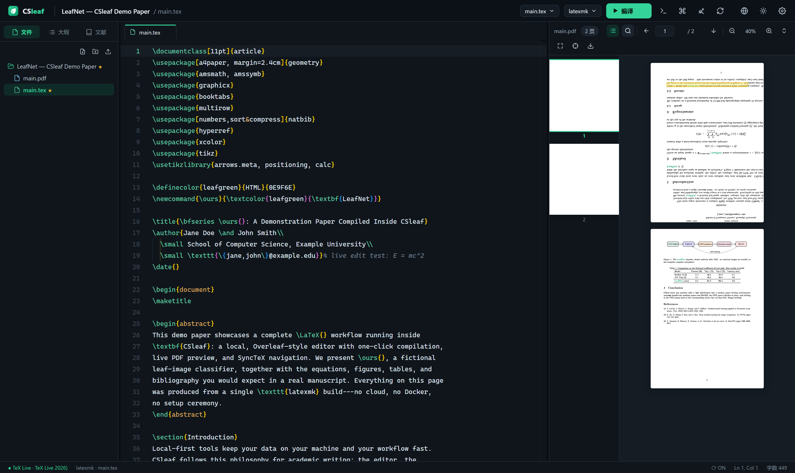
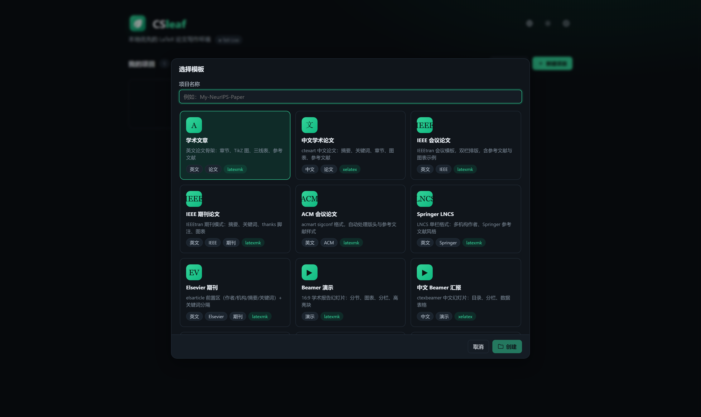
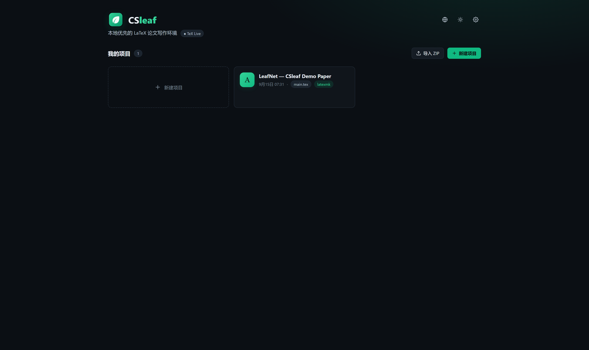
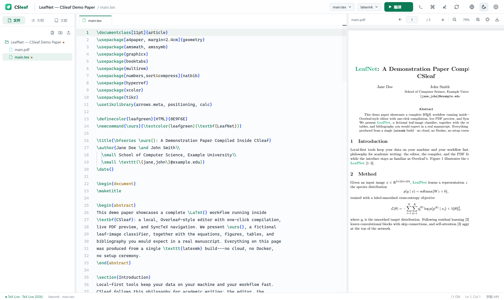

一条命令，在你的电脑上获得 Overleaf 级别的 LaTeX 论文写作体验
A local-first, Overleaf-style LaTeX editor — no Docker, no cloud, no compromise

文件树 · LaTeX 智能补全 · 一键编译 · 实时 PDF 预览 · SyncTeX 双向跳转
从开题到投稿的每一个环节——写、编、译、查——都放在同一个界面里，并且完全运行在你自己的机器上。
latexmk 自动处理多轮编译与 BibTeX，也支持 pdflatex / xelatex / lualatex。保存后自动编译，PDF 原位刷新。
2x 超采样渲染，高分屏下文字锐利；缩略图侧栏整篇导航，页码/总页数/适应宽度/适应页面一应俱全。
在预览里直接查找：匹配计数、Enter/Shift+Enter 上下切换、黄色高亮定位到词。
Alt+S 从光标定位 PDF 位置，双击 PDF 反向跳回源码行。长论文里再也不用肉眼找段落。
\cite{ 自动列出 .bib 条目（带标题预览），\ref{ 列出全文标签，\includegraphics{ 列出项目图片，150+ 命令与环境片段。
全项目中英文字数、章节/小节、插图/表格、公式环境、引用与标签计数，上次编译状态，点击状态栏即达。
解析编译日志，错误/警告精确到文件与行号，点击直接跳转；缺失宏包一目了然。
模板建项、ZIP 导入导出、重命名复制删除、文件树右键操作、上传图片、清理辅助文件。
中文/English 一键切换，深浅两套叶绿主题，三栏布局自由拖拽，所有偏好本地记忆。



Windows 推荐 TeX Live；macOS：brew install --cask mactex-no-gui；Linux：apt install texlive-full。CSleaf 会自动探测，包括 E:\texlive 这类自定义安装位置。
需要 Node.js ≥ 18：
# 克隆并启动 git clone https://github.com/Jensen-Yao/CSleaf.git cd CSleaf npm run setup # 安装依赖 + 构建前端 npm start # 打开 http://127.0.0.1:4513 🌿
从模板新建项目 → Ctrl+Enter 编译 → 开始写作。你的论文保存在 workspace/，永远属于你。
| CSleaf | Overleaf | Overleaf CE 自部署 | TeXstudio | VS Code + 插件 | |
|---|---|---|---|---|---|
| 本地运行 · 数据不出机器 | ✓ | ✗ | ✓ | ✓ | ✓ |
| 无需 Docker / 复杂部署 | ✓ | — | ✗ | ✓ | ✓ |
| 现代三栏 Web 界面 | ✓ | ✓ | ✓ | ✗ | 需配置 |
| 开箱即用（0 配置写作） | ✓ | ✓ | ✗ | — | ✗ |
| 中文论文 / 模板支持 | ✓ | 一般 | 一般 | ✓ | 需配置 |
| 内存占用 & 启动速度 | 轻 · 秒级 | 取决于网络 | 重 | 轻 | 中 |